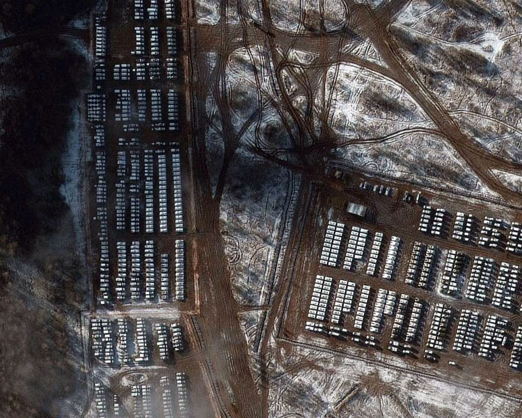

What’s happening in the Russia-Ukraine conflict?
As Russia's military offensive in Ukraine continues, inflicting heavy losses among both soldiers and civilians, these graphics show the latest developments, from military movements to companies withdrawing from Russia.
This may be a conflict in the 21st century but, at times, with its maze of trenches, it feels more like something from the First World War.
Russia's military offensive in eastern Ukraine is already intensifying. You can see it in the long queues of traffic driving west towards relative safety; you can feel it in the deserted streets as you drive through the towns and cities of the Donbas; and you can hear it with the increasing sound of Russian artillery.
Russia is redeploying more of its forces from northern to eastern Ukraine. The objective is to step up the battle in the Luhansk and Donetsk - parts of which were already controlled by Russian backed separatists. Russia will take advantage of its shorter supply lines - something which proved a problem in its failed offensive on the capital Kyiv
1. Timeline of events
 Dec 2021
Dec 2021
The conflict begins silently as Russia starts deploying forces near Ukraine borders
 26 Feb 2022
26 Feb 2022
"German Help: Germany sends 1000 anti-tank weapons and a few other missiles to Ukraine. Ukraine defendes capital city Kyiv despite continuous attack from the other side"
 02 Mar 2022
02 Mar 2022
Russia invades Kharkiv. Kyiv and Kharkiv remain the centre of attack from Russian side while Ukrainians strongly retaliate giving weapons in commoner's hands Russian forces cut off Kharkiv supplies and surround it with attack
 31 Mar 2022
31 Mar 2022
Russia intensifies air attacks on Kyiv and other adjacent regions. Meanwhile Ukrain claims that the enemy forces have withdrawn from nuclear plants and also some of the it declared reclaiming of some of the regions that had been taken over by enemy army
 02 Apr 2022
02 Apr 2022
Two other cities - Poltava and Kremenchuk - attacked by Russian forces. Meanwhile, Ukraine claims that Russian forces have retreated from Kyiv to the eastern borders of Ukraine
2. Invasion underway
Russia's military offensive in eastern Ukraine is already intensifying. You can see it in the long queues of traffic driving west towards relative safety; you can feel it in the deserted streets as you drive through the towns and cities of the Donbas; and you can hear it with the increasing sound of Russian artillery
3. Citizen in distress
Russia's military offensive in eastern Ukraine is already intensifying. You can see it in the long queues of traffic driving west towards relative safety; you can feel it in the deserted streets as you drive through the towns and cities of the Donbas; and you can hear it with the increasing sound of Russian artillery
Countries taking in refugees from Ukraine
Humanitarian Corridors

Civilian casualties
4. Military comparison
Russia's military offensive in eastern Ukraine is already intensifying. You can see it in the long queues of traffic driving west towards relative safety; you can feel it in the deserted streets as you drive through the towns and cities of the Donbas; and you can hear it with the increasing sound of Russian artillery
Countries taking in refugees from Ukraine
Humanitarian Corridors
Civilian casualties
5. World Reacts
Russia's military offensive in eastern Ukraine is already intensifying. You can see it in the long queues of traffic driving west towards relative safety; you can feel it in the deserted streets as you drive through the towns and cities of the Donbas; and you can hear it with the increasing sound of Russian artillery

Date
22 Feb 2022
Country / Organization
European Union
Sanction Details
EU blacklists politicians, lawmakers and officials from Russia. EU investors banned from investing in Russian bonds

Date
27 Feb 2022
Country / Organization
EU, US, UK and Japan
Sanction Details
Russian blocked from access to international payments system SWIFT

Date
01 Mar 2022
Country / Organization
UK, Canada and Singapore
Sanction Details
Both the countries ban Russian ships from docking in their ports. Singapore joins other countries in terms of financial sanctions.

Date
02 Mar 2022
Country / Organization
EU
Sanction Details
Distribution of state-owned Russian media houses - Russia Today and Sputnik - blocked across Europe

Date
07 Mar 2022
Country / Organization
New Zealand and Switzerland
Sanction Details
Russians ships banned from New Zealand ports along with other sanctions. Switzerland bans transactions with Russian Central Bank

Date
08 Mar 2022
Country / Organization
US, UK and Japan
Sanction Details
Russian oil and other energy imports banned by US while UK decides to phase out imports by the end of 2022. Japan bans export of refinery equipments to Russia

Date
25 Mar 2022
Country / Organization
Finland
Sanction Details
The railway link between EU and Russian closed down
5. History of the conflict
Ukraine has always seen an unstable environment since its formation or even before the Soviet Era. The protests and the shift of power followed by turmoils is one the common things found in Ukrainian history.
During all the crises and protests in Ukriane the two main thoughts would come up among the public. First, that Ukraine should become a part of Europe and integrate with eastern side of the country. Second thought was to maintain friendly and close relationship with Russia